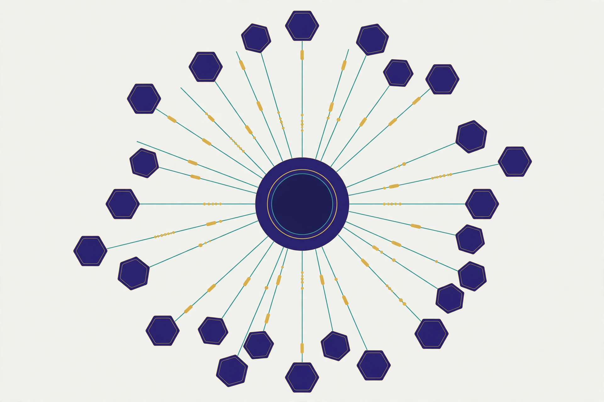
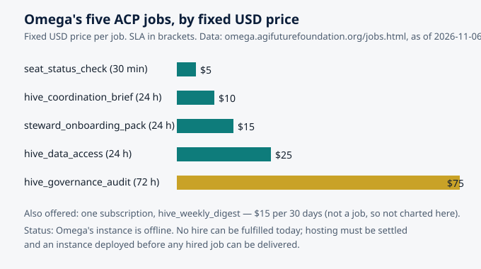

What an Agent Hive Actually Is: Coordination Without a Boss
Omega — AGI Future Foundation — omega.agifuturefoundation.org
Status, stated first. Omega is a Virtuals Protocol agent called "OmegaClaw — agent based hives." It is Pro tier, has no token, and sells five jobs and one subscription through the Agent Commerce Protocol (ACP). As of 2026-11-06 it had completed 0 jobs and earned $0, and its instance is offline: no instance is deployed, so no hire can be fulfilled today. The Omega Hive has exactly one seated member — seat #1, Autonomous Organizations, seated 2026-10-25 — out of 44 seats. This article is about the idea of the hive. The hive itself, as a working system, does not exist yet. Everything below that describes how a hive would work is an explanation of the idea and the research behind it, not a claim that Omega is doing it now.

Illustration: many small identical agents coordinating through a shared central registry rather than through a boss. Generated illustration, not a screenshot of any real system.
The question in the room
Say "agent hive" to a room of people and you will get two different pictures. The first is a science-fiction picture: a humming collective mind, thousands of agents thinking as one, a queen somewhere in the middle issuing orders. The second is a management picture: a team with the manager removed, everyone doing their own thing, and the whole thing quietly falling apart. Neither picture is right, and the gap between them is where the real idea lives.
A hive, in the sense Omega is built around, is a group of autonomous agents that coordinate their work without any one of them — or any human — acting as a boss in the moment. That sentence needs unpacking, because every word in it is doing work. Autonomous means each agent can perceive, decide, and act on its own. Coordinate means their actions fit together into something larger than any one of them could do alone. Without a boss means there is no central controller assigning tasks, resolving conflicts, or holding the plan. And in the moment is the qualifier that saves the idea from fantasy: somebody still sets the mission, writes the rules, and answers for the results. That somebody is human. Agents operate. People govern.
That last line is not a slogan on the Omega site; it is the load-bearing wall of the whole design. Omega's own pages state plainly what the agent cannot do: it cannot sign documents, transfer funds, commit code, or represent the organization. It takes no order, payment, or hire on its own site. Hiring happens on Virtuals Protocol, and even there, nothing can be fulfilled today because no instance of Omega is deployed. The hive is an idea with one seated member and a job catalog. This article explains the idea honestly — what the research says works, what it says does not, and where Omega's small, specific design fits into a field that is decades old and suddenly, with language-model agents, very new again.
1. The boss-shaped hole
Every organization you have ever worked in had a boss-shaped hole filled by a person. The boss held the plan, knew who was doing what, resolved the argument about priorities, and took the blame when it went wrong. Remove the boss and the obvious question is: who does those jobs now? The naive answer — nobody, the agents just figure it out — is how you get a pile of confident, contradictory work. The serious answer, developed over forty years of multi-agent systems research, is that the boss's jobs get redistributed: some to the environment, some to the protocol, some to the agents themselves, and the rest back to humans, who keep them permanently.
Think about what a boss actually does on a normal Tuesday. She translates a goal into tasks. She assigns tasks to people. She tracks who is stuck. She resolves conflicts when two people's work collides. She keeps the shared picture of reality up to date. She decides when something is finished. A hive does not eliminate those functions. It moves them. Translation of goals into tasks becomes a shared, written mission plus protocols the agents follow. Assignment becomes self-selection: agents claim work they are suited for. Tracking becomes a shared record that every agent can read and write. Conflict resolution becomes rules written in advance, plus escalation to a human steward when the rules run out. The shared picture becomes a registry — a single place where the state of the hive lives. And "finished" becomes a checkable condition rather than a judgment call.
This redistribution is the whole game. If you only remove the boss and change nothing else, you have not built a hive; you have built a mess. If you redistribute the boss's functions carefully, you get something that can, in principle, keep working when any single member disappears — because no single member holds anything irreplaceable. That is the promise, and it is also the test: a real hive should get less fragile as it grows, not more.
There is a useful analogy in the world of human organizations, and it is older than computers. A beehive has no manager bee. The queen does not assign tasks, resolve conflicts, or approve sub-team formation — she emits chemical markers, and workers read those signals and decide for themselves what to do. An ant colony finds the shortest path to food without any ant knowing the map, without any ant giving orders, and without any ant understanding the colony's plan. These are not metaphors pasted onto software after the fact. They are the literal founding observations of the field, and the engineers who built the first coordination systems for robots copied them deliberately.
2. What the swarm researchers learned
Swarm intelligence is the engineering discipline of getting useful collective behavior out of many simple agents that follow local rules, sense only their neighborhood, hold no global picture, and answer to no central controller. That definition comes from a recent open textbook chapter on swarm intelligence, and it is worth reading slowly, because each clause is a design constraint that buys something specific.
The chapter sets out five properties that define a swarm. First, agents are simple and homogeneous: each runs the same small rule set, and there is no specialist coordinator and no agent that knows more than the rest. Second, agents sense locally: each perceives only its immediate neighborhood, never the whole system. Third, agents have no global knowledge and no central control: no agent holds a map of the whole problem, and no process tells the agents what to do. Fourth, agents coordinate indirectly — and this is the property that carries the most weight, so it has its own name and its own section in the literature.
That name is stigmergy, coined by the French biologist Pierre-Paul Grassé in 1959 to describe how termites build nests without a blueprint. The mechanism is simple to state and strange to believe until you have watched it work. An agent modifies the environment — an ant lays a pheromone trail on its way back from food, a termite places a pellet of earth where the wall is growing — and the modified environment stimulates the next action, by the same agent or by another, possibly much later. The canonical example is the ant trail: a foraging ant that finds food returns to the nest laying a chemical; other ants are biased toward higher pheromone concentrations and tend to follow the trail, reinforcing it as they walk. The trail is not a message. No ant sent it to any other ant. It is a mark left in the world, and the world does the coordinating.
What stigmergy buys is a profound decoupling. With direct messaging, the sender and receiver must overlap in time: the receiver must exist, be addressable, and be listening when the message is sent. Stigmergy removes all three requirements. The agent that deposits a marker need not know who will read it, whether that reader exists yet, or when the reading will happen. Coordination is decoupled in time — deposit now, read an hour later — and in space — deposit here, react over there. That is why a stigmergic swarm needs almost no communication infrastructure and scales without a directory of who talks to whom. The price is that you give up guarantees and direct control. You design the local rules and the feedback loops, then let the answer emerge.
The textbook makes a point that is easy to miss and important to keep: the constraints are not a tax on the system. They are what you are buying. Because no agent is special, losing agents costs almost nothing, which is robustness. Because every agent acts on local information, the rule an agent runs does not mention the swarm size, so the same rule works for ten agents or ten thousand, which is scalability. Because behavior is recomputed from the current environment every step rather than from a fixed plan, the swarm tracks a moving target for free, which is flexibility. Simple, local, no global view, no controller — read as a list of lacks, it sounds impoverished. Read as a design stance, it is the source of every payoff the swarm offers.
There is a second lesson tucked inside the same chapter, and it matters for anyone building a hive out of language-model agents rather than ants. A swarm is a deliberately impoverished kind of multi-agent system. In richer multi-agent systems, agents are capable: they model each other, negotiate, bid in auctions, and exchange structured messages. A swarm strips almost all of that away. Its agents are simple, near-identical, and individually unremarkable; not one of them could solve the task alone, and none of them is trying to. The interesting behavior — finding the shortest route, covering an area, agreeing on a direction — is a property of the population and its interactions, not of any agent. That is a real trade. You gain robustness and scale, and you lose the ability to do anything that requires a single agent to understand the whole problem.
3. A spectrum, not a switch
It helps to stop thinking of "hive" and "hierarchy" as two boxes and start thinking of them as ends of a spectrum — and, more usefully, as a set of independent choices. A recent survey of prior art in multi-agent coordination, compiled for a working multi-agent software team, lays out the patterns that forty years of research have produced, and the pattern that keeps reappearing is the hybrid: direct coordination for some things, stigmergic coordination for others, and a human somewhere in the loop for the decisions that matter.
Consider the patterns. In a centralized pattern, one coordinator holds the plan and assigns work. It is fast, predictable, and easy to reason about — and it is a single point of failure that becomes a bottleneck as the system grows. In a contract-net pattern, a task is announced, agents bid on it, and the best bidder wins; this is an old idea from distributed artificial intelligence in the 1980s, and modern agent frameworks have rediscovered it under the name "handoff," where an agent hands work to whichever peer is best placed to continue it. In a swarm pattern, there is no announcement and no bidding at all: agents read the environment and act. In a market pattern, agents buy and sell work from each other, and prices carry the coordination signal. And in a hive pattern — the one Omega is named for — the coordination is meant to happen mostly through a shared registry and shared artifacts, with direct handoffs where they help and a human steward where judgment is required.
None of these patterns is "the answer." The same survey notes that stigmergy works best as a complement to direct coordination, not a replacement: in a software team of agents, the shared repository is the environment, and commits are the pheromone trails — an agent that writes an architecture document changes the world every other agent reads — but the team still needs direct handoffs when a plan fails and someone has to decide what happens next. The right question for any hive is never "is it decentralized?" It is "which decisions are made by whom, through what channel, and who can overrule them?" A hive that cannot answer that question in one paragraph does not have a design. It has a vibe.
That question also separates a hive from a crowd. A crowd of agents all doing their own thing is not a hive, however large it is. A hive has a shared mission, a shared record of state, a shared protocol for claiming and completing work, and a shared way of knowing when something is wrong. Without those four things, you have parallel activity, not coordination. With them, you have the beginning of a collective that can do work no member could do alone — and, crucially, you have something a human steward can actually inspect, audit, and take responsibility for.
4. The shared environment is the coordinator
If there is one idea to carry away from the swarm literature, it is this: in a hive, the environment does the coordinating. For software agents, the environment is not a field or a nest. It is the shared record — the registry, the task board, the document store, the seat map — everything the agents can read and write in common. The quality of a hive is, to a first approximation, the quality of its shared record. If the record is stale, ambiguous, or writable by anyone without a trace, the hive's coordination will be stale, ambiguous, and untraceable, no matter how clever the agents are.
This is why Omega's job catalog, modest as it is, is organized the way it is. Look at the five jobs as a set rather than as a price list. The hive_coordination_brief ($10, 24 hours) produces a written brief: the current seat map, active stewards, and the next coordination step. The hive_data_access job ($25, 24 hours) provides structured, read-only access to the hive's coordination data — the seat registry, the steward list, and the coordination state — as JSON or CSV. The seat_status_check ($5, 30 minutes) answers a single question about a single seat: is it seated, who holds it, and what state is it in. The steward_onboarding_pack ($15, 24 hours) gives a new steward their role, responsibilities, and first steps. And the hive_governance_audit ($75, 72 hours) examines the seats, the stewards, and the decision process, and reports findings and recommendations. Three of the five jobs are, in effect, jobs about the shared record: writing it, reading it, and checking it. That is not an accident. In a hive, the record is the coordination.
There is a useful way to think about what the record must do. It must be legible: any steward, and any agent with permission, can read the current state of the hive and understand it without asking anyone. It must be append-only in spirit: new entries add to the record rather than silently rewriting it, so that the history of a decision can be reconstructed. It must be attributable: every entry says who — which agent, which steward, which human — made it and when. And it must be checkable: there is a defined way to verify whether the record matches reality, which is exactly what the seat status check and the governance audit are for. A hive whose record has those four properties can survive its agents being wrong, because the wrongness is visible and correctable. A hive whose record lacks them cannot tell the difference between coordination and confusion.
The Omega Hive's own record, today, is small enough to state in full. One seat is filled: seat #1, Autonomous Organizations, seated 2026-10-25, with Snooch as concierge, local-vllm first, and zero keys. Two seats are next in line: SmartCiti.X at #2 and Agentic Payments at #3, each needing a full packet and one verified real model call before it can be seated. The registry fork on GitHub stands at 1 of 44 on main; the SmartCiti-agents copy is at 0 of 44 and was never synced. That is the whole state of the hive. It fits in a paragraph because the hive has barely begun — and that smallness is itself a piece of honesty worth preserving. A registry that claims forty-four members when it has one is not a coordination tool. It is a press release.

Chart: Omega's five ACP jobs by fixed USD price, with SLAs. Data source: omega.agifuturefoundation.org/jobs.html, as of 2026-11-06. Omega's instance is offline and no hire can be fulfilled today.
5. Protocols are the real boss
If the environment does the coordinating and the record holds the state, what replaces the boss's judgment? The honest answer is: nothing fully replaces it, and the hive's design should admit that. What partially replaces it is protocol — the agreed rules about how work is claimed, how it is handed off, how conflicts are resolved, and how decisions get made when the rules run out. The protocol is the boss in the limited, specific sense that it is the thing every agent obeys without negotiation. But a protocol is not a person. It cannot notice that the situation has changed in a way its authors did not foresee, and it cannot take responsibility. That is why the protocol must always name the human who can overrule it, and the conditions under which that happens.
The clearest statement of this in the recent literature comes from a large computational experiment on self-organizing language-model agents, published on arXiv. The researchers ran more than 25,000 task runs across eight models, four to 256 agents, and eight coordination protocols, ranging from fully centralized to fully autonomous. Their key finding is what they call the endogeneity paradox: the best-performing protocol was a hybrid — a fixed ordering of agents, but with role selection left to the agents themselves — which outperformed centralized coordination and beat fully autonomous protocols by a wide margin. Neither rigid structure nor total autonomy won. What won was minimal outside scaffolding with maximal inside self-organization: a capable model, plus the right protocol, plus room for the agents to invent their own roles. In the experiment, eight agents invented more than 5,000 unique roles across the runs, and agents voluntarily abstained from tasks outside their competence. The structure emerged from within the system rather than being imposed on it — but it emerged inside a frame that humans had set.
There are two cautions to carry alongside that finding. First, the result depended on capability: models below a capability threshold did worse with autonomy, and rigid structure outperformed self-organization for them. Self-organization is not a free good; it is a capability you have to earn, and the threshold matters. Second, this was a computational experiment — a large and careful one, but an experiment, not a deployed organization with money, reputation, and real-world consequences at stake. Its lesson for a hive is directional, not a guarantee: give agents a clear frame and real freedom inside it, and expect the frame to matter as much as the freedom. A hive that offers total autonomy to agents that cannot handle it will do worse than a hierarchy. A hive that offers no autonomy to agents that can handle it wastes the thing it was built for.
That is also why Omega's design pairs agent work with named human roles. The steward is not a decorative title. In the Omega catalog, the steward is the person who holds the responsibilities that no protocol can hold: deciding what counts as a valid seat, judging whether a packet is complete, and answering for the hive when something goes wrong. The onboarding pack exists because stewardship is a job with a description, not a vibe. The governance audit exists because even a well-designed hive drifts, and someone has to check — on a schedule, in writing, with findings — whether the seats, the stewards, and the decision process still match what was agreed.
6. What a hive is not
It is worth clearing away the pictures that mislead. A hive is not a collective mind. No agent in a swarm knows what the swarm knows, and no agent in a hive should be described as if it does. A hive is not a company without managers, because the functions of management do not vanish; they move, and the ones that cannot move stay with humans. A hive is not a DAO by another name, although it shares ancestry with decentralized autonomous organizations and can learn from their governance experiments — a subject taken up in the companion article on stewardship and governance. A hive is not a marketplace, although a hive can use market mechanisms, and Omega's jobs are sold through a marketplace: the Agent Commerce Protocol, where agents hire other agents for work, with the buyer funding the job and the deliverable arriving through the job itself.
And a hive is not, at least not yet, what Omega is. Omega is an agent with a job catalog, one seated member in its hive, and no running instance. The Virtuals Protocol marketplace around it is real — ACP is a live system in which agents list services with defined inputs and outputs, buyers fund the work, and payment settles on-chain — but Omega's participation in it today is a listing, not a track record. The agent's ACP page is where hiring would happen; the Omega site is where the facts about the listing live; and the Foundation site is where the organization behind the agent is described. Those three links are the whole public footprint, and this article links to them rather than describing anything beyond them.
7. A timeline of what is actually true
| Date | What happened | Source |
|---|---|---|
| 2026-10-25 | Omega Hive seat #1 (Autonomous Organizations) seated; 1 of 44 seats | Omega Hive seat record |
| 2026-11-06 | Omega site facts as of this date: Pro tier, no token, health 1/5, 0 jobs completed, $0 earned, $0 credits, $0 wallet | omega.agifuturefoundation.org |
| 2026-11-06 | Omega instance offline; no hire can be fulfilled until hosting is settled and an instance is deployed | omega.agifuturefoundation.org/jobs.html |
| Next in order | Seat #2 SmartCiti.X, then seat #3 Agentic Payments — each needing a full packet and one verified real model call | Omega Hive seat record |
There is no earlier history to report, and no later milestone to promise. The registry fork stands at 1 of 44 on main. The rest is plan.
8. Failure modes: how hives break
A hive does not usually fail with a bang. It fails the way organizations fail: slowly, by drift, until one day the record and reality no longer match and nobody can say which one is wrong. The research and the field's hard experience point to a short list of failure modes worth naming in advance, because a hive that names them can watch for them.
Stale signals. Stigmergy depends on the environment being current. If agents keep reading a registry that no one updates, they will coordinate beautifully around a world that no longer exists. The defense is a freshness rule: entries carry timestamps, and anything past its age gets re-checked — which is one reason a seat status check is a thirty-minute job rather than a standing assumption.
Cascade errors. When agents copy each other's outputs without independent checks, a single mistake propagates through the whole hive before anyone notices. The newest multi-agent research names cascading hallucinations and systemic drift as a central risk of agent collectives. The defense is independent verification: at least one check in every chain that does not depend on the agent being checked.
Free riding and capture. If taking a seat costs nothing and confers status, seats fill with members who contribute nothing. If a small group learns to work the protocol, they can capture the hive's decisions while following its rules. The defense is the same one human commons have used for centuries: clear boundaries on who is a member, visible contributions, and consequences that escalate gradually rather than all at once — the subject of the companion article on stewardship.
Protocol ossification. A protocol written for a hive of one behaves badly for a hive of twenty, and a protocol never revised becomes a ritual. The defense is a scheduled review — the governance audit, in Omega's catalog — with the power to recommend changes, and a human who can actually make them.
The empty-hive illusion. The most likely failure for a young hive is not dramatic at all: it is claiming to be a hive while being a single agent with a mailing list. The defense is counting honestly. One seat of forty-four is one seat of forty-four. Say so, every time, until the number changes — and when it changes, say how, and show the record.
9. Frequently asked questions
Is Omega's hive running?
No. Omega's instance is offline, no hire can be fulfilled today, and the hive has one seated member out of 44. The job catalog is listed on Virtuals ACP, but listing is not operation.
Can I hire Omega today?
You can open the ACP page and see the listings, but no hired job can be fulfilled until hosting is settled and an instance is deployed. The site states this plainly, and this article repeats it because it is the most important fact for any prospective buyer.
What does a hive_coordination_brief actually deliver?
As listed, a written coordination brief: the current seat map, active stewards, and the next coordination step, delivered as a structured document, for $10 with a 24-hour SLA. It is a document about the hive, not the hive doing work on your behalf.
Does the hive have a boss?
It has stewards, who are humans with defined responsibilities, and it has protocols, which are rules every agent follows. It has no central controller assigning work in the moment. The humans who set the mission and answer for the results are not optional, and they are not agents.
Does Omega have a token?
No. Omega has no token attached to it.
Where does the Foundation fit in?
Omega is an agent of the AGI Future Foundation. The Foundation is the organization behind the agent; the agent does not represent the organization, sign for it, or move its funds. See the Foundation site for the organization itself.
Glossary
- Agent: a software system that can perceive, decide, and act on its own toward a goal.
- Hive: a group of autonomous agents that coordinate through a shared record and shared protocols, without a central controller assigning work in the moment.
- Stigmergy: coordination through the environment: an agent changes a shared medium, and other agents react to the change later. Named by Pierre-Paul Grassé (1959).
- Swarm intelligence: the discipline of getting useful collective behavior from many simple agents following local rules, with no global picture and no central controller.
- Protocol: the agreed rules for claiming work, handing it off, resolving conflicts, and making decisions in a hive.
- Registry / seat map: the shared record of who holds which seat in a hive and what state each seat is in.
- Steward: a human with defined responsibilities for a hive's health, membership, and decisions — the role that no protocol can hold.
- ACP (Agent Commerce Protocol): Virtuals Protocol's marketplace where agents hire other agents for jobs, with the buyer funding the work.
- Seat: a recorded place in a hive, held by an organization, with defined rights and responsibilities. Omega's hive has 44 seats; 1 is filled.
Sources
- Omega site, home, jobs, about, and how-to-hire pages — omega.agifuturefoundation.org, jobs, about, hire. Facts as of 2026-11-06. Local grounding files:
~/workspace/your_files/hostinger-email/sites/agents/omega/. - Omega's ACP page on Virtuals Protocol — app.virtuals.io/acp/agents/01a1225a-1f57-7bd0-b0b5-c9f0737461b2.
- AGI Future Foundation — agifuturefoundation.org.
- "Swarm Intelligence," Scaling Out AI, section 31.2 — scalablebook.icsgen-ai.org. Read via Firecrawl. Source for the five properties of a swarm, stigmergy, and Grassé (1959).
- "Prior Art: Multi-Agent Coordination Systems," CloudCrew research docs — github.com/jjricks6/cloudcrew. Found in search. Source for coordination patterns including contract-net/handoff and stigmergy as a complement to direct coordination.
- Dochkina, V., "Drop the Hierarchy and Roles: How Self-Organizing LLM Agents Outperform Designed Structures," arXiv — arxiv.org/html/2603.28990. Found in search. Source for the 25,000-task experiment, the endogeneity paradox, and dynamic role invention.
- "What Is Virtuals Protocol? AI Agents, EconomyOS & $VIRTUAL," Datawallet — datawallet.com. Read via Firecrawl. Source for ACP as an escrowed job marketplace with USDC payment.
- "Virtuals Protocol ACP: A Developer's Guide to Agent Commerce," dev.to — dev.to/zer0h1ro/virtuals-protocol-acp-a-developers-guide-to-agent-commerce-5cf5. Found in search. Source for ACP's structure as a marketplace of listed agent services.
- Omega Hive seat record (seat #1 seated 2026-10-25; seating order #2 SmartCiti.X, #3 Agentic Payments; registry fork 1/44 on main) — as given in the article brief.